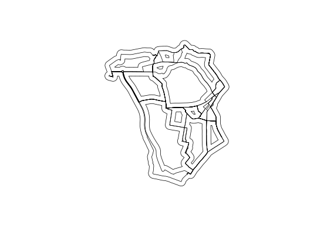
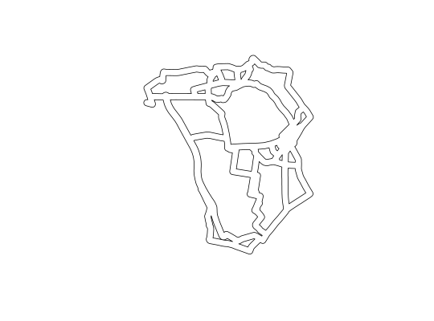
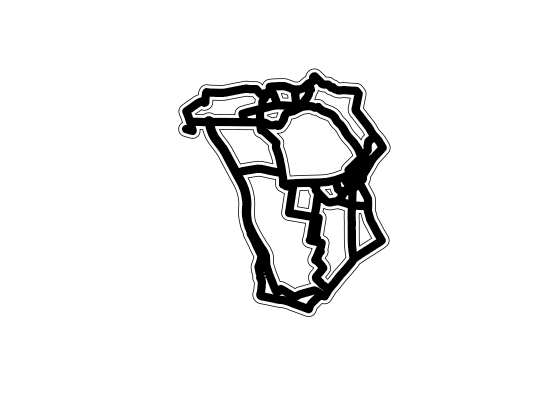

Solves the problem that buffers will not be circular when used on non-projected data.
buff_geo(shp, width, ..., silent = TRUE)
| shp | A spatial object with a geographic CRS (WGS84) around which a buffer should be drawn |
|---|---|
| width | The distance (in metres) of the buffer |
| ... | Arguments passed to rgeos::gBuffer() |
| silent | A binary value for printing the CRS details (default: FALSE) |
Returns a
data("routes_fast") sp::proj4string(routes_fast) <- CRS("+init=epsg:4326") buff <- buff_geo(routes_fast, width = 100)#>#>plot(buff)plot(routes_fast, add = TRUE)# Test it works the same on projected data shp <- spTransform(routes_fast, CRS("+init=epsg:27700")) buff2 = buff_geo(shp, 50) # test if it works the same on projected data plot(buff2)plot(routes_fast, add = TRUE) # note they do not showbuff3 = spTransform(buff2, CRS("+init=epsg:4326")) plot(buff)plot(buff3, add = TRUE, col = "black")